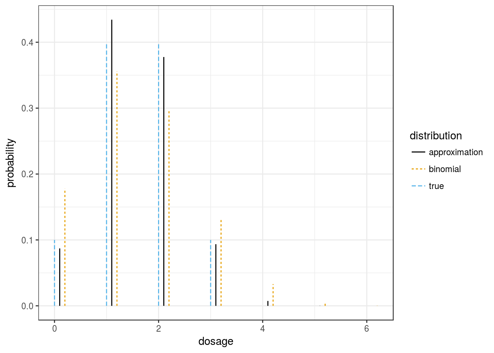

mupdog we are using a Gaussian-Binomial distribution to estimate the distribution of genotypes.
\[\begin{align*}
z &\sim N(0, \sigma^2)\\
y &= F^{-1}(\Phi(z)|K, \alpha),
\end{align*}\]
where \(F^{-1}(\cdot|K,\alpha)\) is the quantile function of a binomial distribution with size \(K\) and success probability \(\alpha\), and \(\Phi(\cdot)\) is the CDF of a standard normal.
Let’s see how good this model can possibly be under model mispecification.
Since we are estimating parameters by maximum likelihood, as we get more individuals the estimate of the Gaussian-Binomial distribution will converge to that which is closes to the true distribution in terms of Kullback-Leibler divergence. I made the function kl_opt in mupdog to find this minimizer for any provided distribution dist.
Let’s suppose that the individuals are actually all siblings, let’s compare the resulting distribution across a range of genotypes.
ploidy <- 6
qarray <- updog::get_q_array(ploidy)Let’s say the parents have genotype Aaaaaa and AAaaaaa
dist <- qarray[2, 3, ]
klout <- mupdog::kl_opt(dist = dist, ploidy = ploidy)The optimal values are
klout$sigma2## [1] 0.5057klout$alpha## [1] 0.2579The value of \(\alpha\) is close to the mean of 0.25.
The distributions looks pretty close! The binomial looks a lot worse.
library(tidyverse)
library(ggthemes)
bindist <- dbinom(x = 0:ploidy, size = ploidy, prob = sum(dist * (0:ploidy)) / ploidy)
data_frame(dosage = 0:ploidy, true = dist, approximation = klout$dist,
binomial = bindist) %>%
gather(key = "distribution", value = "probability", 2:4) ->
dfdat
dfdat$dosage[dfdat$distribution == "approximation"] <- dfdat$dosage[dfdat$distribution == "approximation"] + 0.1
dfdat$dosage[dfdat$distribution == "binomial"] <- dfdat$dosage[dfdat$distribution == "binomial"] + 0.2
ggplot(dfdat, mapping = aes(x = dosage, xend = dosage, y = 0, yend = probability, lty = distribution,
color = distribution)) +
geom_segment() +
theme_bw() +
ylab("probability") +
scale_color_colorblind()
dist <- qarray[3, 3, ]
klout <- mupdog::kl_opt(dist = dist, ploidy = ploidy)The optimal values are
klout$sigma2## [1] 0.5465klout$alpha## [1] 0.3381The value of \(\alpha\) is close to the mean of 0.3333.
The distributions looks pretty close! The binomial looks a lot worse.
library(tidyverse)
library(ggthemes)
bindist <- dbinom(x = 0:ploidy, size = ploidy, prob = sum(dist * (0:ploidy)) / ploidy)
data_frame(dosage = 0:ploidy, true = dist, approximation = klout$dist,
binomial = bindist) %>%
gather(key = "distribution", value = "probability", 2:4) ->
dfdat
dfdat$dosage[dfdat$distribution == "approximation"] <- dfdat$dosage[dfdat$distribution == "approximation"] + 0.1
dfdat$dosage[dfdat$distribution == "binomial"] <- dfdat$dosage[dfdat$distribution == "binomial"] + 0.2
ggplot(dfdat, mapping = aes(x = dosage, xend = dosage, y = 0, yend = probability, lty = distribution,
color = distribution)) +
geom_segment() +
theme_bw() +
ylab("probability") +
scale_color_colorblind()sim_mat <- matrix(NA, nrow = (ploidy + 1) * (ploidy + 2) / 2, ncol = 5)
true_list <- list()
approx_list <- list()
index <- 1
for (i in 0:ploidy) {
for (j in i :ploidy) {
dist <- qarray[i + 1, j + 1, ]
klout <- mupdog::kl_opt(dist = dist, ploidy = ploidy)
sim_mat[index, 1] <- i
sim_mat[index, 2] <- j
sim_mat[index, 3] <- klout$sigma2
sim_mat[index, 4] <- klout$alpha
sim_mat[index, 5] <- sum((0:ploidy) * dist / ploidy)
true_list[[index]] <- dist
approx_list[[index]] <- klout$dist
dist_df <- data_frame(dosage = 0:ploidy, true = dist, approximation = klout$dist) %>%
gather(key = "distribution", value = "probability", 2:3)
dist_df$dosage[dist_df$distribution == "approximation"] <- dist_df$dosage[dist_df$distribution == "approximation"] + 0.2
dist_df$ij <- paste0("(", i, ",", j, ")")
if (i == 0 & j == 0) {
dist_tot <- dist_df
} else {
dist_tot <- bind_rows(dist_tot, dist_df)
}
index <- index + 1
}
}
sim_df <- as_data_frame(sim_mat)
names(sim_df) <- c("i", "j", "sigma2", "alpha", "true_mean")ggplot(dist_tot, mapping = aes(x = dosage, xend = dosage, y = 0, yend = probability, lty = distribution,
color = distribution)) +
geom_segment() +
theme_bw() +
ylab("probability") +
scale_color_colorblind() +
facet_wrap(~ij, ncol = 2) +
theme(strip.background = element_rect(fill = "white"))However, we generally only have one sigma for each individual shared across all SNPs. So we can’t have it be so flexible.
hist(sim_df$sigma2)mean(sim_df$sigma2)## [1] 0.3947Let’s see how they all look when we fix \(\sigma^2\) to be 0.4 and we let \(\alpha\) be the mean of the true distribution.
It looks OK, but there are some combinations that don’t look so good.
sigma2 <- 0.4
for (i in 0:ploidy) {
for (j in i:ploidy) {
dist <- qarray[i + 1, j + 1, ]
alpha <- sum(dist * (0:ploidy)) / ploidy
approx <- c(mupdog:::compute_all_post_prob(ploidy = ploidy,
mu = matrix(data = 0, nrow = 1, ncol = 1),
sigma2 = matrix(data = sigma2, nrow = 1, ncol = 1),
alpha = alpha, rho = 0))
dist_df <- data_frame(dosage = 0:ploidy, true = dist, approximation = approx) %>%
gather(key = "distribution", value = "probability", 2:3)
dist_df$dosage[dist_df$distribution == "approximation"] <- dist_df$dosage[dist_df$distribution == "approximation"] + 0.2
dist_df$ij <- paste0("(", i, ",", j, ")")
dist_df$alpha <- alpha
dist_df$sigma2 <- sigma2
if (i == 0 & j == 0) {
dist_tot <- dist_df
} else {
dist_tot <- bind_rows(dist_tot, dist_df)
}
}
}ggplot(dist_tot, mapping = aes(x = dosage, xend = dosage, y = 0, yend = probability, lty = distribution,
color = distribution)) +
geom_segment() +
theme_bw() +
ylab("probability") +
scale_color_colorblind() +
facet_wrap(~ij, ncol = 2) +
theme(strip.background = element_rect(fill = "white"))This R Markdown site was created with workflowr